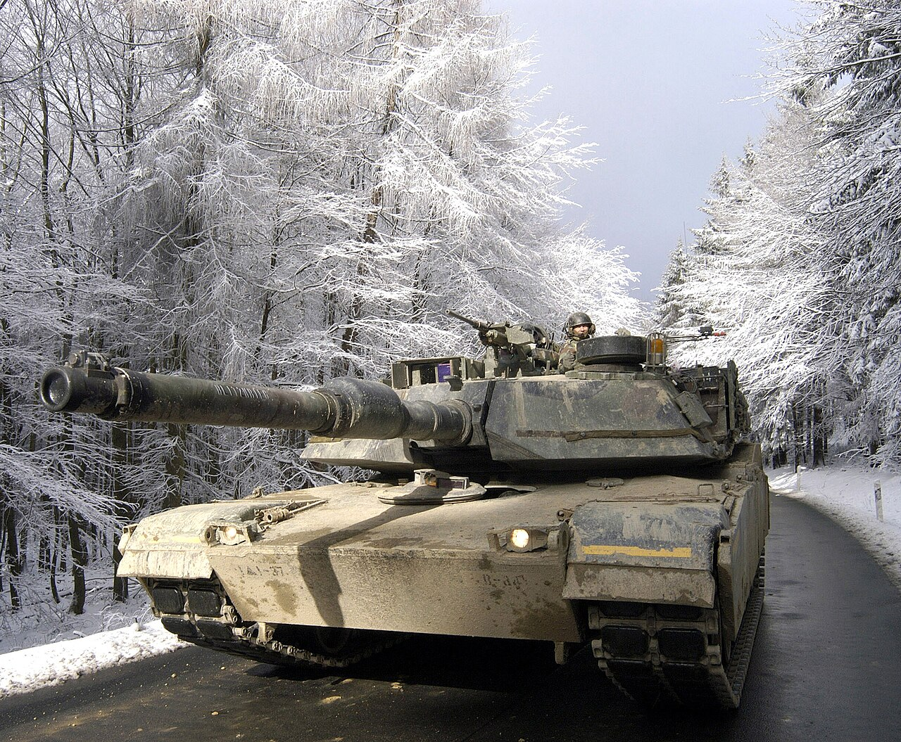

Az M1917 az Egyesült Államok első sorozatban gyártott harckocsija volt. A francia Renault FT mintájára fejlesztették ki az első világháború idején.

Az M3 Stuart könnyű harckocsit elsősorban a gyors mozgásra és a felderítésre tervezték. A második világháború elején az amerikaiak és a britek is használták.
Az M3 Lee egy átmeneti megoldás volt, amelyet gyorsan kellett kifejleszteni, mert az amerikai hadseregnek nagyobb tűzerejű harckocsikra volt szüksége.
Az M4 Sherman az amerikai páncélosok egyik legismertebb típusa lett. Nem egyetlen kiemelkedő tulajdonsága, hanem a nagy sorozatban történő gyárthatóság, a karbantarthatóság és a megbízhatóság együttese tette fontossá.
Érdekesség, hogy a Shermanek egyes változatait a katonák a gyúlékony üzemanyag és lőszer miatti tűzveszélyre utaló, nem túl hízelgő becenevekkel is illették. Ez azonban nem jelentette azt, hogy minden Sherman ugyanúgy viselkedett volna: a különböző változatok eltérő műszaki megoldásokat alkalmaztak.
Az M24 Chaffee-t azért fejlesztették ki, mert az M3 Stuart már nem felelt meg minden elvárásnak. Az új típus könnyű maradt, de erősebb löveget és korszerűbb futóművet kapott.